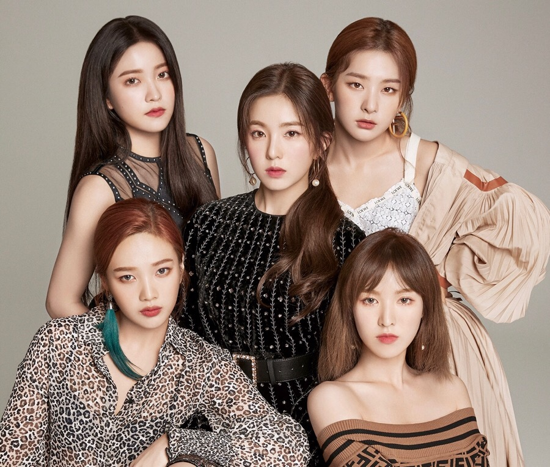

레드벨벳은 SM엔터테인먼트 소속 5인조 걸그룹이다. 특히 조이를 제외한 멤버 전원이 SM Rookies 출신인 첫 걸그룹이기도 하다. SM엔터테인먼트의 완벽주의답게 노래 실력이 매우 뛰어나다. 아이린을 제외한 모든 멤버들은 본인들의 곡이 있다. 아이린은 프로듀서 레이든의 The Only의 피처링한 경력이 있으며 예리는 자신이 직접 작사, 작곡한 노래가 하나 있다. 비주얼 레전드 그룹으로 불리며 멤버 전원이 엄청난 미모의 소유자다. 멤버들 중 한 명이 다른 어떤 그룹을 가도 메인 비주얼을 담당할 수 있을 것이라는 말이 있을 정도로 멤버 모두가 엄청난 미인이다. 레드벨벳의 노래들은 빌보드 선정 K-POP 순위에서 항상 상위권에 든다. 2010년대 최고의 K-POP TOP 100에서 빨간맛이 2위, Bad Boy가 27위이다. 빌보드 비평가 선정 2018년 최고의 K-POP TOP 30에서 Bad Boy가 1위를 수상하면서 그 역량을 발휘하였다.
SM엔터테인먼트에서는 레드벨벳이 소녀시대와 f(x)의 중간, 즉 두 선배 그룹의 아이덴티티를 융화한 컨셉을 추구한다고 밝혔다. 즉, f(x)의 독특함과 엉뚱한 소녀의 이미지를 이어받으면서 소녀시대의 친근함, 발랄하고 사랑스러운 이미지도 계승하며 다양한 매력을 만든다는 뜻이다. 하지만 실질적인 음악 스타일은 f(x)와 조금 더 비슷하다.[9] 하지만 R&B나 발라드가 중심이 되는 벨벳 컨셉의 곡들은 천상지희 느낌도 난다고 평가한다.